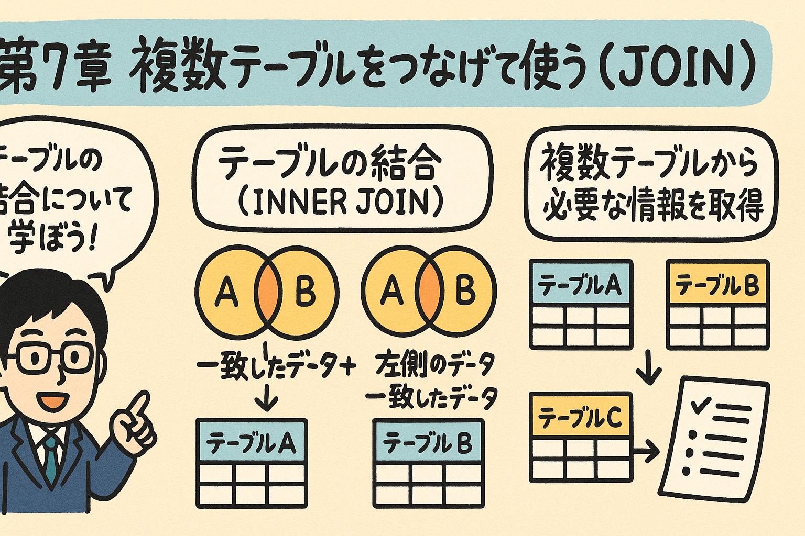

この第7章では、SQLの重要な機能である「JOIN」について学習します。複数のテーブルを結合して、より複雑なデータ検索や分析を行う方法を習得しましょう。
実際のデータベース設計では、データを複数のテーブルに分割して管理することが一般的です。この章では、それらの分割されたテーブルを必要に応じて結合し、意味のある情報を取得するためのJOIN操作について学びます。
JOINは、複数のテーブルを結合してデータを取得するためのSQL機能です。正規化されたデータベースでは、情報が複数のテーブルに分散されているため、それらを結合して必要な情報を得ることが頻繁に必要となります。
例えば、以下のような2つのテーブルを考えてみましょう：
| customer_id | name | |
|---|---|---|
| 1 | 山田太郎 | yamada@example.com |
| 2 | 佐藤花子 | sato@example.com |
| 3 | 鈴木一郎 | suzuki@example.com |
| order_id | customer_id | order_date | amount |
|---|---|---|---|
| 101 | 1 | 2023-01-15 | 5000 |
| 102 | 2 | 2023-01-16 | 3000 |
| 103 | 1 | 2023-01-20 | 2000 |
「どの顧客がいつ注文したか？」という情報が知りたい場合、customersテーブルとordersテーブルを結合する必要があります。両方のテーブルには「customer_id」という共通のカラムがあり、これを使って関連する行を結びつけることができます。
両方のテーブルで一致する行のみを返します。一方のテーブルに対応するデータがない行は結果に含まれません。
左側のテーブルのすべての行を返し、右側のテーブルの一致する行があればそれも返します。右側のテーブルに一致する行がない場合はNULLが返されます。
右側のテーブルのすべての行を返し、左側のテーブルの一致する行があればそれも返します。左側のテーブルに一致する行がない場合はNULLが返されます。
両方のテーブルのすべての行を返します。一致する行がない場合は、対応するテーブルの列にNULLが設定されます。
図7.1: 各種JOINのイメージ図
JOINを使用するSQL文の基本的な構文は次のとおりです：
SELECT column1, column2, ...
FROM table1
JOIN_TYPE table2
ON table1.common_column = table2.common_column;
JOIN_TYPEの部分には、INNER JOIN、LEFT JOIN、RIGHT JOIN、FULL JOINのいずれかが入ります。
INNER JOINは最も一般的なJOIN操作で、両方のテーブルで一致する行のみを返します。一致する行がない場合、その行は結果セットに含まれません。
SELECT column1, column2, ...
FROM table1
INNER JOIN table2
ON table1.common_column = table2.common_column;
「INNER」キーワードは省略可能で、単に「JOIN」と書くこともできます。
先ほどの顧客テーブルと注文テーブルを使って、顧客名と注文情報を結合して表示してみましょう：
SELECT
customers.name,
orders.order_date,
orders.amount
FROM
customers
INNER JOIN
orders
ON
customers.customer_id = orders.customer_id;
この結果は以下のようになります：
| name | order_date | amount |
|---|---|---|
| 山田太郎 | 2023-01-15 | 5000 |
| 佐藤花子 | 2023-01-16 | 3000 |
| 山田太郎 | 2023-01-20 | 2000 |
注意点として、鈴木一郎さん（customer_id = 3）は注文を行っていないため、結果に表示されていません。これがINNER JOINの特徴で、両方のテーブルに一致するデータがある場合のみ結果に含まれます。
SQLでは、テーブルに別名（エイリアス）を付けて、クエリをより読みやすくすることができます：
SELECT
c.name,
o.order_date,
o.amount
FROM
customers AS c
INNER JOIN
orders AS o
ON
c.customer_id = o.customer_id;
「AS」キーワードは省略可能です：
SELECT
c.name,
o.order_date,
o.amount
FROM
customers c
INNER JOIN
orders o
ON
c.customer_id = o.customer_id;
以下の2つのテーブルを考えてください：
products（商品テーブル）:
| product_id | product_name | price |
|---|---|---|
| 1 | ノートPC | 80000 |
| 2 | スマートフォン | 60000 |
| 3 | ヘッドフォン | 15000 |
order_items（注文明細テーブル）:
| order_id | product_id | quantity |
|---|---|---|
| 101 | 1 | 1 |
| 102 | 2 | 1 |
| 103 | 3 | 2 |
次のタスクを完了するSQLクエリを作成してください：
LEFT JOIN（または LEFT OUTER JOIN）は、左側のテーブル（FROM句で指定したテーブル）のすべての行を返し、右側のテーブルの一致する行があればそれも返します。右側のテーブルに一致する行がない場合は、右側のテーブルの列にNULLが設定されます。
SELECT column1, column2, ...
FROM table1
LEFT JOIN table2
ON table1.common_column = table2.common_column;
先ほどの顧客テーブルと注文テーブルを使って、すべての顧客と彼らの注文情報（注文がない場合もあり）を表示してみましょう：
SELECT
customers.name,
orders.order_date,
orders.amount
FROM
customers
LEFT JOIN
orders
ON
customers.customer_id = orders.customer_id;
この結果は以下のようになります：
| name | order_date | amount |
|---|---|---|
| 山田太郎 | 2023-01-15 | 5000 |
| 佐藤花子 | 2023-01-16 | 3000 |
| 山田太郎 | 2023-01-20 | 2000 |
| 鈴木一郎 | NULL | NULL |
INNER JOINと異なり、鈴木一郎さん（customer_id = 3）も結果に含まれていますが、注文データがないため、order_dateとamountはNULLになっています。
LEFT JOINは、「情報が欠けているレコードを見つける」ような分析に役立ちます。例えば、注文を行っていない顧客を探すクエリは次のようになります：
SELECT
customers.name,
customers.email
FROM
customers
LEFT JOIN
orders
ON
customers.customer_id = orders.customer_id
WHERE
orders.order_id IS NULL;
この結果は以下のようになります：
| name | |
|---|---|
| 鈴木一郎 | suzuki@example.com |
PostgreSQLではLEFT JOINとRIGHT JOINの両方がサポートされていますが、多くの場合、FROM句のテーブルの順序を変更することで、RIGHT JOINをLEFT JOINに置き換えることができます。読みやすさと一貫性のため、多くの開発者はLEFT JOINを好んで使用します。
以下の3つのテーブルを考えてください：
students（学生テーブル）:
| student_id | name |
|---|---|
| 1 | 山田太郎 |
| 2 | 佐藤花子 |
| 3 | 鈴木一郎 |
courses（コーステーブル）:
| course_id | course_name |
|---|---|
| 101 | 数学 |
| 102 | 物理 |
| 103 | 化学 |
enrollments（履修登録テーブル）:
| student_id | course_id | grade |
|---|---|---|
| 1 | 101 | 85 |
| 1 | 102 | 90 |
| 2 | 101 | 78 |
次のタスクを完了するSQLクエリを作成してください：
実際のデータベースでは、3つ以上のテーブルを結合する必要があることがよくあります。SQLでは、複数のJOIN句を使って3つ以上のテーブルを結合できます。
先ほどの顧客テーブルと注文テーブルに、商品テーブルを追加して考えてみましょう：
| customer_id | name |
|---|---|
| 1 | 山田太郎 |
| 2 | 佐藤花子 |
| order_id | customer_id |
|---|---|
| 101 | 1 |
| 102 | 2 |
| order_id | product_id | quantity |
|---|---|---|
| 101 | 1 | 2 |
| 101 | 2 | 1 |
| 102 | 2 | 1 |
| product_id | product_name | price |
|---|---|---|
| 1 | ノートPC | 80000 |
| 2 | スマートフォン | 60000 |
「どの顧客がどの商品を何個注文したか？」という情報を取得するには、3つのテーブルを結合する必要があります：
SELECT
c.name AS 顧客名,
p.product_name AS 商品名,
oi.quantity AS 数量
FROM
customers c
JOIN
orders o ON c.customer_id = o.customer_id
JOIN
order_items oi ON o.order_id = oi.order_id
JOIN
products p ON oi.product_id = p.product_id;
この結果は以下のようになります：
| 顧客名 | 商品名 | 数量 |
|---|---|---|
| 山田太郎 | ノートPC | 2 |
| 山田太郎 | スマートフォン | 1 |
| 佐藤花子 | スマートフォン | 1 |
複数のテーブルを結合する場合、以下の点に注意してパフォーマンスを最適化できます：
以下の4つのテーブルを考えてください：
departments（部門テーブル）:
| dept_id | dept_name |
|---|---|
| 1 | 営業部 |
| 2 | 開発部 |
| 3 | 人事部 |
employees（従業員テーブル）:
| emp_id | name | dept_id |
|---|---|---|
| 101 | 山田太郎 | 1 |
| 102 | 佐藤花子 | 2 |
| 103 | 鈴木一郎 | 2 |
| 104 | 高橋次郎 | NULL |
projects（プロジェクトテーブル）:
| project_id | project_name |
|---|---|
| 1 | 新製品開発 |
| 2 | システム改善 |
| 3 | マーケティング |
project_assignments（プロジェクト配属テーブル）:
| emp_id | project_id | role |
|---|---|---|
| 101 | 3 | リーダー |
| 102 | 1 | メンバー |
| 102 | 2 | リーダー |
| 103 | 1 | リーダー |
次のタスクを完了するSQLクエリを作成してください：
ここでは、実際のECサイトに近いテーブル構造を使って、「誰がどの商品を買ったか？」という情報を一覧表示する演習を行います。
以下の4つのテーブルがあるとします：
CREATE TABLE users (
user_id SERIAL PRIMARY KEY,
username VARCHAR(50) NOT NULL,
email VARCHAR(100) NOT NULL,
registration_date DATE NOT NULL
);
CREATE TABLE products (
product_id SERIAL PRIMARY KEY,
product_name VARCHAR(100) NOT NULL,
description TEXT,
price DECIMAL(10, 2) NOT NULL,
category VARCHAR(50)
);
CREATE TABLE orders (
order_id SERIAL PRIMARY KEY,
user_id INTEGER REFERENCES users(user_id),
order_date TIMESTAMP NOT NULL,
total_amount DECIMAL(10, 2),
status VARCHAR(20) NOT NULL
);
CREATE TABLE order_items (
order_item_id SERIAL PRIMARY KEY,
order_id INTEGER REFERENCES orders(order_id),
product_id INTEGER REFERENCES products(product_id),
quantity INTEGER NOT NULL,
price DECIMAL(10, 2) NOT NULL
);
テーブルに以下のようなサンプルデータが入っているとします：
-- usersテーブルのサンプルデータ
INSERT INTO users (user_id, username, email, registration_date) VALUES
(1, 'tanaka_taro', 'tanaka@example.com', '2023-01-15'),
(2, 'suzuki_hanako', 'suzuki@example.com', '2023-02-20'),
(3, 'sato_jiro', 'sato@example.com', '2023-03-10');
-- productsテーブルのサンプルデータ
INSERT INTO products (product_id, product_name, description, price, category) VALUES
(1, 'ノートPC A', '高性能ノートパソコン', 120000.00, '電子機器'),
(2, 'スマートフォン B', '最新モデルのスマートフォン', 85000.00, '電子機器'),
(3, 'ヘッドフォン C', 'ノイズキャンセリング機能付き', 25000.00, 'オーディオ'),
(4, '腕時計 D', '防水機能付き高級腕時計', 35000.00, 'アクセサリー');
-- ordersテーブルのサンプルデータ
INSERT INTO orders (order_id, user_id, order_date, total_amount, status) VALUES
(1, 1, '2023-04-05 10:30:00', 120000.00, '完了'),
(2, 2, '2023-04-10 15:45:00', 110000.00, '完了'),
(3, 1, '2023-04-15 09:20:00', 35000.00, '処理中'),
(4, 3, '2023-04-20 14:15:00', 25000.00, '完了');
-- order_itemsテーブルのサンプルデータ
INSERT INTO order_items (order_item_id, order_id, product_id, quantity, price) VALUES
(1, 1, 1, 1, 120000.00),
(2, 2, 2, 1, 85000.00),
(3, 2, 3, 1, 25000.00),
(4, 3, 4, 1, 35000.00),
(5, 4, 3, 1, 25000.00);
次の要件を満たすSQLクエリを作成してください：
1. ユーザー名、注文日、商品名、数量、価格、注文状態を一覧表示する：
SELECT
u.username AS ユーザー名,
o.order_date AS 注文日,
p.product_name AS 商品名,
oi.quantity AS 数量,
oi.price AS 価格,
o.status AS 状態
FROM
users u
JOIN
orders o ON u.user_id = o.user_id
JOIN
order_items oi ON o.order_id = oi.order_id
JOIN
products p ON oi.product_id = p.product_id
ORDER BY
o.order_date;
2. ユーザーごとに購入した商品の合計金額を計算して表示する：
SELECT
u.username AS ユーザー名,
SUM(oi.price * oi.quantity) AS 合計購入金額
FROM
users u
JOIN
orders o ON u.user_id = o.user_id
JOIN
order_items oi ON o.order_id = oi.order_id
GROUP BY
u.username
ORDER BY
合計購入金額 DESC;
3. 各商品ごとに何人のユーザーが購入したかをカウントして表示する：
SELECT
p.product_name AS 商品名,
COUNT(DISTINCT u.user_id) AS 購入ユーザー数
FROM
products p
JOIN
order_items oi ON p.product_id = oi.product_id
JOIN
orders o ON oi.order_id = o.order_id
JOIN
users u ON o.user_id = u.user_id
GROUP BY
p.product_name
ORDER BY
購入ユーザー数 DESC;
4. まだ一度も注文されていない商品を表示する：
SELECT
p.product_name AS 未購入商品名,
p.price AS 価格,
p.category AS カテゴリー
FROM
products p
LEFT JOIN
order_items oi ON p.product_id = oi.product_id
WHERE
oi.order_item_id IS NULL;
これらのクエリは、複数のテーブルを適切に結合（JOIN）することで、意味のある情報を抽出しています。
上記のテーブル構造とサンプルデータを使って、以下の課題にも挑戦してみましょう：
以下の問題に答えて、第7章の内容の理解度を確認しましょう。
問題1: 次のうち、INNER JOINの特徴として正しいものはどれですか？
問題2: 次のSQLクエリで使用されているJOINの種類は何ですか？
SELECT students.name, courses.course_name FROM students LEFT JOIN enrollments ON students.student_id = enrollments.student_id LEFT JOIN courses ON enrollments.course_id = courses.course_id;
問題3: テーブルAとテーブルBがあり、LEFT JOINを使用した場合、次のうち正しい説明はどれですか？
問題4: 3つのテーブル（A、B、C）を結合するSQLクエリの正しい構文はどれですか？
問題5: 次のSQL文で、まだ注文されていない商品を見つけるには、空欄にどのような条件を入れればよいですか？
SELECT products.* FROM products LEFT JOIN order_items ON products.product_id = order_items.product_id WHERE ________;
この章では、SQLのJOIN操作について学びました。複数のテーブルを結合することで、より複雑なデータ検索や分析が可能になります。次の章では、さらに高度なSQL機能について学んでいきます。
練習問題に取り組み、実際のデータベースでJOINを使ってみることで、この章で学んだ概念をしっかりと身につけましょう。
以下のミニプロジェクトに取り組んで、JOINの概念を実践してみましょう：